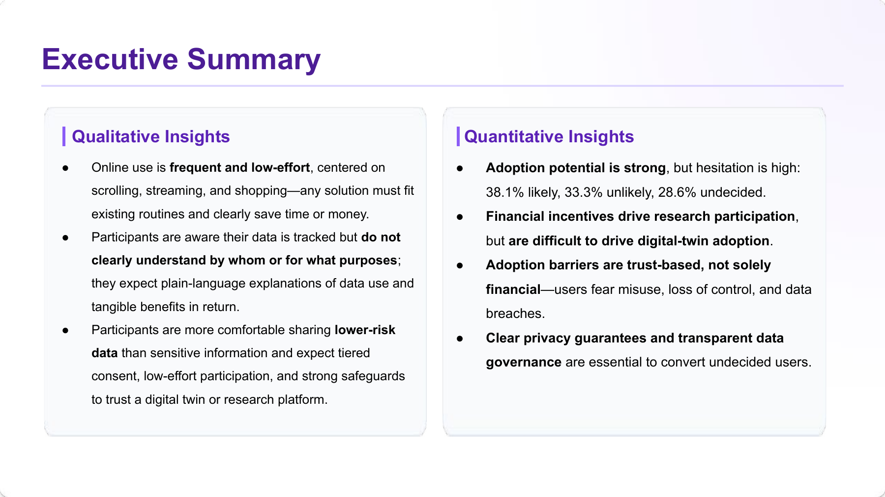
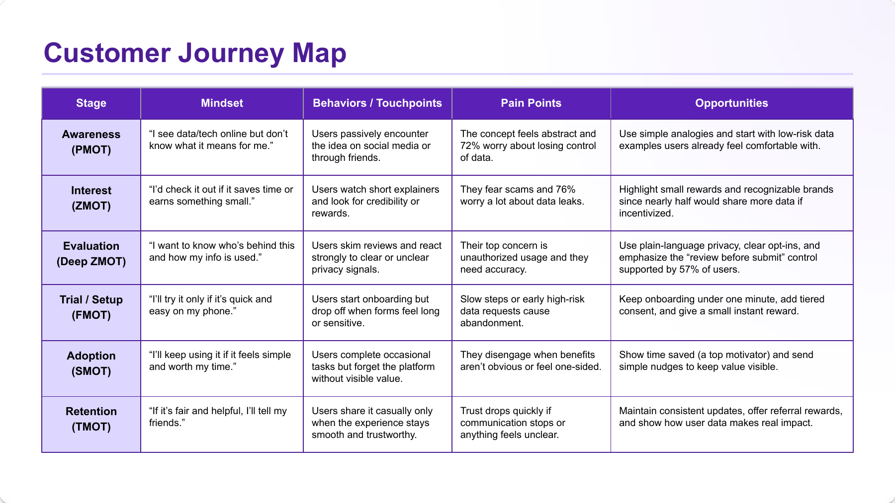

Situation
The platform wanted to test whether financially motivated users were a viable early-adopter segment.
Task
Identify adoption drivers and barriers, then translate them into product and growth recommendations.
Action
Ran 5 in-person interviews and a 28-item survey with 21 respondents; compared motivations, data sensitivity, and concerns, and mapped a six-stage customer journey.
Result
Found that payment motivates research participation but does not directly translate into digital-twin adoption. Delivered six trust/value recommendations; the small exploratory sample did not establish an adoption uplift.


